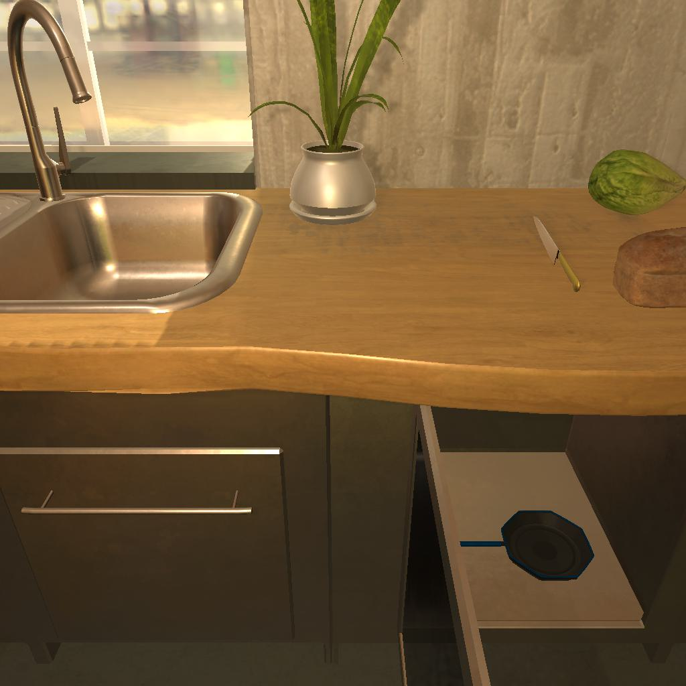

---------------------------------------------------------task: 26---------------------------------------------------------
--------------------------------------------------------------------------------------------------------------------------------------------------------------------
--------------------------------------------------------------------------------------------------------------------------------------------------------------------
Step:--------------------------------------------------------------------------8-------------------------------------------------------------------------------
----------------------------------------
VLM Prompt:
Image1:
**Instruction**
1. Analyze the provided image to identify all visible household objects, focusing on those relevant to the task description "find two kettle and put them in cabinet."
2. Use the analysis of the image and the task hint "The agent must find an object of the desired type, pick it up, find the correct location to place it, put it down there, then look for another object of the desired type, pick it up, return to previous location, and put it down there with the other object." to answer the question: what is the most reasonable action in the choices for the task description "find two kettle and put them in cabinet"?
4. Decide and write the answer using the template: The answer is: (i): , where i is the real number. If there is no desired object in the image, search every place based on **Initial Observation** to find the object. And if no one is exactly correct, choose a similar answer.
**Initial Observation**
You are in the middle of a room. Looking quickly around you, you can see countertop (1), coffeemachine (1), cabinet (1-4), drawer (1-8), sink (1), sinkbasin (1), garbagecan (1), fridge (1), microwave (1), dresser (1), sidetable (1)
**Answer Choices**
(1): go to countertop 1
(2): go to coffeemachine 1
(3): go to drawer 1
(4): go to sink 1
(5): go to sinkbasin 1
(6): go to garbagecan 1
(7): go to cabinet 4
(8): go to drawer 2
(9): go to fridge 1
(10): go to microwave 1
(11): go to dresser 1
(12): go to sidetable 1
(13): go to drawer 3
(14): go to drawer 4
(15): go to drawer 5
(16): go to drawer 6
(17): go to drawer 7
(18): go to drawer 8
(19): open cabinet 2
(20): close cabinet 2
(21): take houseplant 1 from cabinet 2
(22): take faucet 1 from cabinet 2
(23): take pan 1 from cabinet 2
(24): take bread 1 from cabinet 2
(25): take lettuce 1 from cabinet 2
(26): take knife 1 from cabinet 2
(27): examine cabinet 2
**Answer**
Let's think step by step by following the instructions.
----------------------------------------
----------------------------------------
Original Response:
First, analyze the image: The visible objects in the image are a sink, a houseplant, a knife, a pan inside an open cabinet, and some food items on the countertop. There are no kettles visible in the image.
Based on the initial observation, kettles are not listed, so they might be inside cabinets or drawers that are not visible in the image.
The task is to find two kettles and put them in a cabinet. The most reasonable action would be to start looking for the kettles in locations where they are likely to be stored when not in use, such as cabinets or drawers.
Given the answer choices and the task description, the best course of action would be to check inside the cabinets first, as they are more likely to store larger items like kettles compared to drawers.
The answer is: (7): go to cabinet 4. If there is no kettle inside cabinet 4, then the agent should proceed to search other cabinets or drawers based on the initial observation list.
----------------------------------------
----------------------------------------
>>> Refine Original VLM Response and Get Pure Action: go to cabinet 4
----------------------------------------
-----------------------------------------------------------------
Running time: 54.893282890319824 seconds
Total Money: 9.34154
-----------------------------------------------------------------
-----------------------------------------------------------------
Text Observation:You arrive at loc 9. The cabinet 4 is closed.
-----------------------------------------------------------------
UNSUCCEED